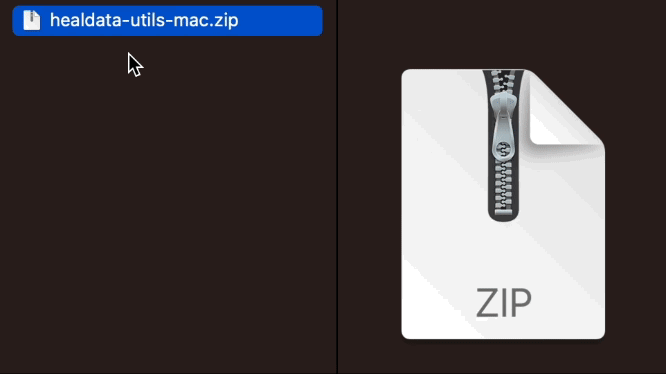

Generate a HEAL-compliant Data Dictionary (Beta Testing)¶
The HEAL Data Utilities is a tool developed in order to help investigators generate HEAL-compliant variable-level metadata (VLMD), in the form of standardized data dictionaries. This VLMD Tool is a software package that can be leveraged via a command-line interface (CLI) and HEAL Workspaces, but can also be incorporated into existing pipelines.
Info
The following instructions will walk you through the process of downloading a stand-alone executable version of the VLMD Tool. This is recommended for users with less familiarity with the CLI, who want a more streamlined approach to generate HEAL-compliant data dictionaries. If you would like to install and integrate the VLMD Tool into an existing local pipeline, please check out the HEAL Data Utilities on GitHub or PyPi for any requirements and more information.
Download the VLMD Tool¶
You can download the latest version of the VLMD tool from the NIH HEAL Initiative’s GitHub repository here: https://github.com/HEAL/healdata-utils/releases/latest
Please select and download the version that matches your operating system. If your computer is running MacOS, you should select ‘healdata-utils-mac.zip’; for Windows, ‘healdata-utils-windows.zip’; for Linux, ‘healdata-utils-linux.zip’.
Once you have downloaded the zip file, double-click the file to uncompress the package. You should then see a file labeled vlmd or vlmd.exe, depending on your operating system.

Double-clicking vlmd will open your computer's command-line interface. On macOS, this is the application Terminal. For Windows and PC users, your command-line interface may be PowerShell or Command Prompt. Once the interface opens and the Tool is loaded, you will be greeted with four options: documentation, extract, start, and validate.

documentation : Launch the vlmd data dictionary definitions in the documentation¶
extract: Extract the variable level metadata from an existing file with a specific¶
type/format
start: Start a data dictionary from an empty template¶
validate: Check (validate) an existing HEAL data dictionary file to see if it follows the HEAL specifications after filling out a template or further annotation after extracting from a different format.¶
Using the VLMD Tool in HEAL Workspaces with Python¶
This tool can also be used in HEAL Workspaces, rather than downloading to your local machine. To request access to a workspace, see instructions [here] (./heal_workspace_registration.md).
Once access has been approved, select the (Generic) Jupyter Lab Notebook with R Kernel to get started using the VLMD Tool in HEAL Workspaces.
After you’ve launched the workspace, you can import the necessary functions:.
extract:¶
from healdata_utils import convert_to_vlmd
convert_to_vlmd(input_filepath="myproject/myfile.sav",inputtype="spss")
start:¶
from healdata_utils import write_vlmd_template
write_vlmd_template(tmpdir.joinpath("heal.csv"),numfields=10)
validate:¶
from healdata_utils import validate_vlmd_csv,validate_vlmd_json
validate_vlmd_csv("data/myhealcsvdd.csv")
validate_vlmd_json("data/myhealjsondd.json")
Please note, using the VLMD Tool in HEAL Workspaces is only recommended for users who have input data dictionary, rather than an entire dataset. We do not recommend uploading your entire dataset into the secure cloud environment.